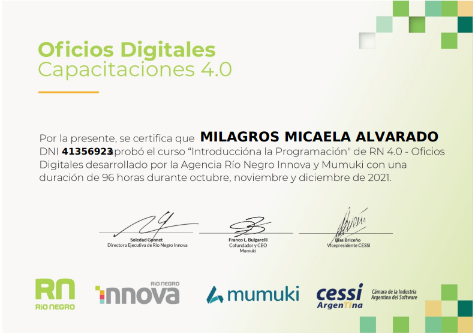
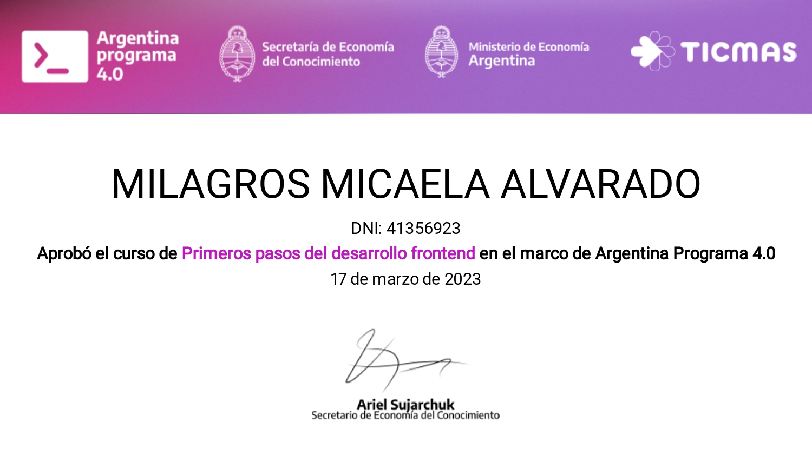
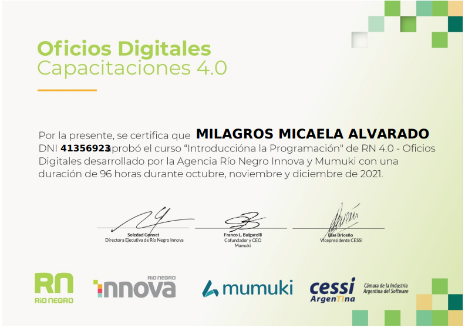
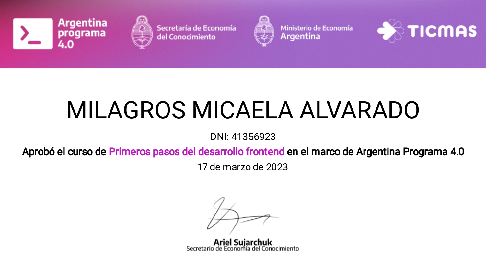

Milagros Alvarado
DESARROLLADORA FULL STACK
CONTACTO
- milagrosalvarado001@gmail.com
- 2994599175
IDIOMAS
- Español nativo
- Inglés medio
HABILIDADES
- Diseño web
- Front-End
- Back-End
- Linux
- Agile
HERRAMIENTAS
- Html5
- Css3
- JavaScript
- Bootstrap
- Node JS
- MariaDB
- React
PERFIL PERSONAL
Soy estudiante del segundo año de Desarrollo de Software Full Stack, me apasiona aprender nuevas tecnologías. Mi objetivo es participar en proyectos que me permitan seguir creciendo profesionalmente y ampliar mi experiencia en el campo del desarrollo de software. Me considero una persona proactiva, creativa y comprometida. Estoy segura de que mi pasión y habilidades serán una valiosa contribución para cualquier equipo de trabajo en el que tenga la oportunidad de participar
FORMACIÓN ACADÉMICA
- (2012 - 2018) Bachiller en Informática
- (2022-En curso) Tecnicatura Superior en Desarrollo de Software Full Stack
FORMACIÓN ADICIONAL
Mostrar Diplomatura 


